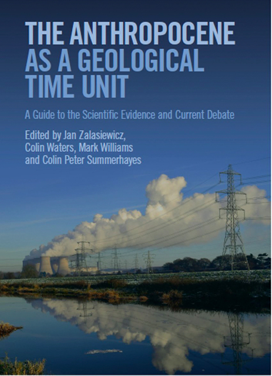
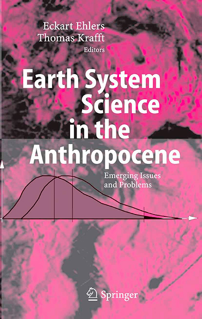
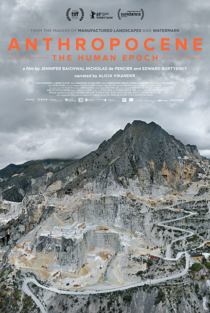
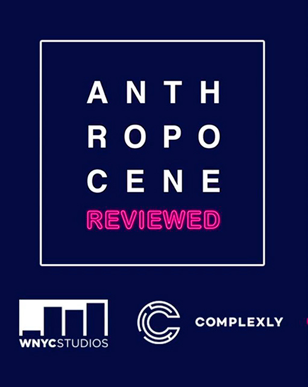

El término “Antropoceno” se usa informalmente en contextos científicos, ya que actualmente la Comisión Internacional de Estratigrafía (ICS por sus siglas en inglés) no ha aprobado oficialmente el término como una subdivisión del tiempo geológico. El Grupo de Trabajo del Antropoceno, subcomisionado por el ICS, votó en 2019 a favor de presentar una propuesta formal a la misma en 2021, ubicando su inicio a mediados del siglo XX, con el comienzo de la Gran aceleración, y el término es cada vez más aceptado dentro de la comunidad científica.
The Anthropocene as a Geological Time Unit

Este libro presenta la evidencia para definir el Antropoceno como una época geológica, escrito por el equipo internacional que analiza su posible adición a la escala de tiempo geológico. El cambio ambiental global se coloca dentro del contexto de los procesos planetarios y el tiempo geológico profundo. Esta es una revisión autorizada del Antropoceno, cruzando disciplinas científicas, de ciencias sociales y humanidades.
The “Anthropocene”

Esta publicación académica por el químico ganador del Premio Nobel, Paul J. Crutzen, dentro del libro “Earth System Science in the Anthropocene” narra el desarrollo de las actividades humanas en el impacto creciente sobre el medio ambiente a todas las escalas, superando en muchos sentidos a los procesos naturales y justifica asignar el término “antropoceno” a la época geológica actual.
Anthropocene: The Human Epoch

En esta meditación cinematográfica sobre la reingeniería masiva del planeta por parte de la humanidad, el equipo de este largometraje documental viaja a seis continentes y veinte países diferentes durante cuatro años mientras siguen la investigación del Grupo de Trabajo del Antropoceno para capturar imágenes asombrosas que relatan el catastrófico camino recorrido por nuestra especie durante el último siglo.
Enter the Anthropocene — Age of Man
Este artículo publicado por en el número de marzo de 2011 de la revista National Geographic por la periodista ganadora del Premio Pulitzer, Elizabeth Kolbert, presenta a los lectores el concepto del Antropoceno siguiendo a Jan Zalasiewicz, una estratigrafista británica buscando validarlo como una época geológica. Esta lectura es una gran introducción al concepto así como interesante para los familiarizados con el mismo.
The Anthropocene Reviewed

En este podcast presentado el escritor y creador de contenido de YouTube John Green califica diferentes facetas del Antropoceno en una escala de cinco estrellas, desde productos completamente artificiales como el Diet Dr. Pepper hasta especies naturales que han visto alterado su destino por la influencia humana como el ganso de Canadá, narrando acontecimientos importantes del Antropoceno en un tono tan amigable y humorístico como introspectivo.
Anthropocene: A Very Short Introduction | Erle C. Ellis
En este podcast presentado el escritor y creador de contenido de YouTube John Green califica diferentes facetas del Antropoceno en una escala de cinco estrellas, desde productos completamente artificiales como el Diet Dr. Pepper hasta especies naturales que han visto alterado su destino por la influencia humana como el ganso de Canadá, narrando acontecimientos importantes del Antropoceno en un tono tan amigable y humorístico como introspectivo.